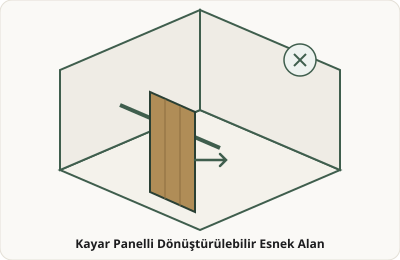
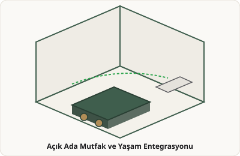
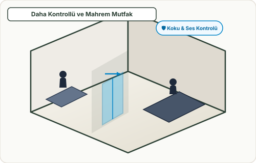

B
BRIF.AI Mimari Asistan
Yeni evinizde günlük yaşamınızı ve mekân kullanımı ritminizi anlamak istiyorum. Ev hafta içinde genellikle nasıl kullanılıyor?
MK
Siz
Ben çoğu gün ofisteyim. Eşim evden çalışıyor. Çocuklar okuldan dört gibi geliyor.
B
BRIF.AI Mimari Asistan
Anladım. Eviniz gün içinde tamamen boş kalmıyor. Eşinizin evden çalışma sürecinde akustik mahremiyet ve sessizlik ne derece kritik?
B
BRIF.AI Mimari Asistan
Şimdi 3 karşılaştırmalı tur hâlinde mekânsal ilişki örnekleri sunuyorum. Hangi mekânsal niteliklerin size uygun olduğunu anlamak istiyoruz.

1A. Tamamen Ayrı Çalışma Odası
Ana yaşam alanından duvar ve kapı ile tam izole edilmiş kapalı çalışma mekânı.
Bu örnekte size uygun gelen özellikler neler?

1B. Ortak Yaşama Bağlı Çalışma Alanı
Yaşam alanına görsel olarak açık veya alçak bölücü ile bağlı çalışma alanı.
Bu örnekte size uygun gelen özellikler neler?
2A. Sabit Ayrışma
Oda sınırları ve duvarları sabit, net tanımlanmış mekân organizasyonu.
Bu örnekte size uygun gelen özellikler neler?

2B. Kayar Panelle Dönüşebilen Esnek Alan
Gerektiğinde kayar panellerle kapanan veya açılıp salonla birleşen çok amaçlı alan.
Bu örnekte size uygun gelen özellikler neler?

3A. Açık Mutfak ve Yaşam İlişkisi
Mutfak adası ve yemek alanının salonla kesintisiz bütünleştiği sosyal açık plan kurgusu.
Bu örnekte size uygun gelen özellikler neler?

3B. Kontrollü & Mahrem Mutfak İlişkisi
Cam sürgülü kapı ile koku ve ses geçişi kontrol edilen bağımsız mutfak.
Bu örnekte size uygun gelen özellikler neler?
📌 Örnek Prototip Varsayımı
İki katlı müstakil konut, yaklaşık 190–220 m² brüt kapalı alan.
Tahmini Toplam Net Alan
148 – 168 m²
Örnek prototip hesabı
Dolaşım & Servis Payı (~22%)
32 – 42 m²
Örnek prototip hesabı
Tahmini Brüt Kapalı Alan
190 – 220 m²
Örnek prototip hesabı
📐
Bu taslak hangi varsayımlarla oluşturuldu?
İki katlı konut • ~190–220 m² brüt • Kuzey yönü • Arsa verisi girilmedi
⚡ Hızlı Demo Senaryoları:
📋 Yapılandırılmış İşlem Önizlemesi
İstenen Değişiklik: Çalışma Alanını Küçült
Hedef: 14 m² → 10–11 m²
Korunacaklar: Mutfak alanı, Toplam brüt alan
Etkilenecekler: Çocuk odaları metrajı, Dolaşım payı
Teknik Kontrol: Ön kontrolden geçti
Alternatif Karşılaştırma & Nitel Göstergeler
⚠️ Ön kavramsal karşılaştırma — hesaplanmış performans puanı değildir.
Eksen
Alternatif A (Kontrollü)
Alternatif B (Esnek)
Akustik Ayrışma
Güçlü
Orta
Görsel Bağlantı
Orta
Güçlü
Esneklik & Dönüşebilirlik
Düşük
Güçlü
Mahremiyet
Güçlü
Orta
Dolaşım Sadeliği
Güçlü
Güçlü
Mimar Teknik Brief & Karar Revizyon Raporu
Sentezlenmiş mimari brief, yasal ön kontroller ve karar geçmişi.
📜 Karar ve Revizyon Geçmişi
1. Doğrulanmış Kullanıcı Verileri
- Doğrudan kullanıcı beyanı Eşim evden çalışıyor, online toplantılar var.
- Doğrudan kullanıcı beyanı Çocuklar 16:00'da dönüyor.
2. Görsel Tercih Nitelikleri
- Kullanıcının görsel tercihi Sessizlik & Gerektiğinde kapanabilirlik.
3. Teyit Gereken Konular
- Teyit Gerekli Tam akustik ayrışma mı yoksa esnek bağlantı mı öncelikli?